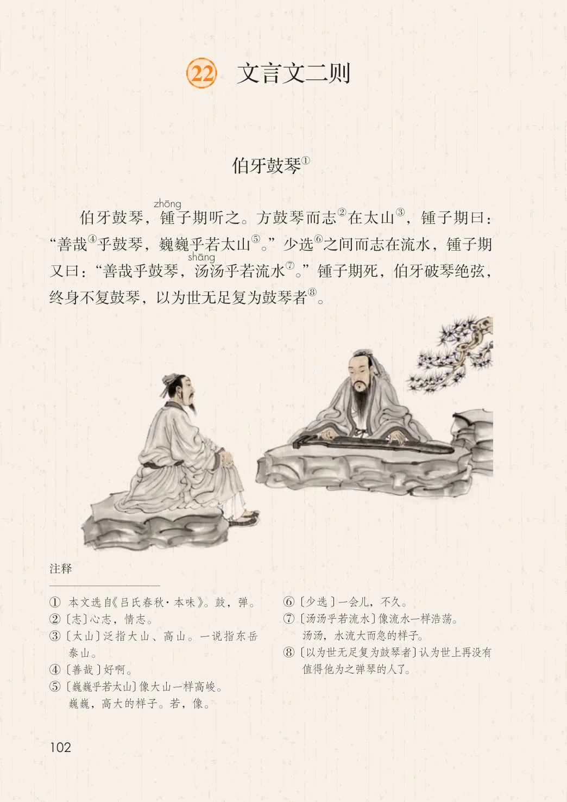
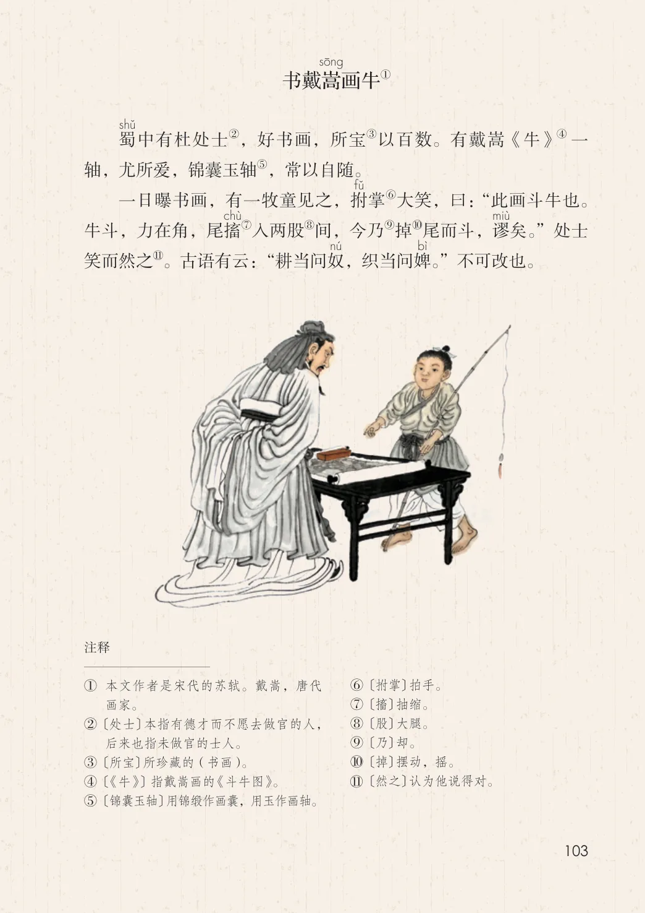
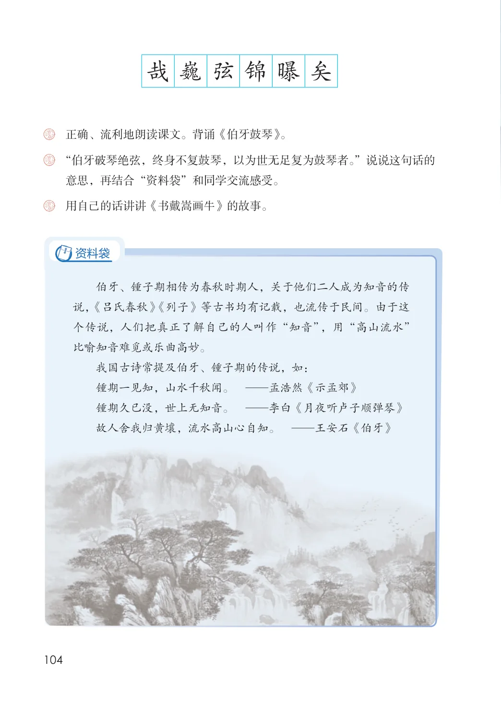

第七单元 · 第 22 课
文言文二则
文字内容 PDF 第 107 页
①伯牙鼓琴
②在太山③，锺子期曰：伯牙鼓琴，锺子期听之。方鼓琴而志
④乎鼓琴，巍巍乎若太山⑤。”少选⑥之间而志在流水，锺子期“善哉
⑦。”锺子期死，伯牙破琴绝弦，又曰：“善哉乎鼓琴，汤汤乎若流水
⑧。终身不复鼓琴，以为世无足复为鼓琴者
文字内容 PDF 第 108 页
①书戴嵩画牛
蜀
②，好书画，所宝③以百数。有戴嵩《牛》④ 一中有杜处士
⑤，常以自随。轴，尤所爱，锦囊玉轴
⑥大笑，曰：“此画斗牛也。一日曝书画，有一牧童见之，拊掌
⑦入两股⑧间，今乃⑨掉⑩尾而斗，谬牛斗，力在角，尾搐矣。”处士
笑而然之。古语有云：“耕当问奴，织当问婢。”不可改也。
文字内容 PDF 第 109 页
哉巍弦锦曝矣
课后练习
- 正确、流利地朗读课文。背诵《伯牙鼓琴》。
- “伯牙破琴绝弦，终身不复鼓琴，以为世无足复为鼓琴者。”说说这句话的
- 意思，再结合“资料袋”和同学交流感受。用自己的话讲讲《书戴嵩画牛》的故事。资料袋伯牙、锺子期相传为春秋时期人，关于他们二人成为知音的传说，《吕氏春秋》《列子》等古书均有记载，也流传于民间。由于这个传说，人们把真正了解自己的人叫作“知音”，用“高山流水”比喻知音难觅或乐曲高妙。我国古诗常提及伯牙、锺子期的传说，如：锺期一见知，山水千秋闻。 —孟浩然《示孟郊》锺期久已没，世上无知音。 —李白《月夜听卢子顺弹琴》故人舍我归黄壤，流水高山心自知。 —王安石《伯牙》
原版对照
原书页面与全部插图
点击图片可查看大图。


